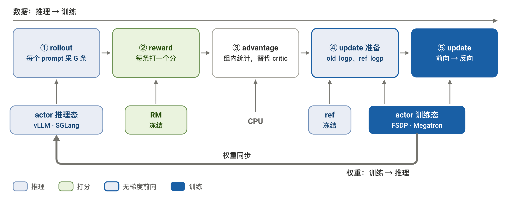
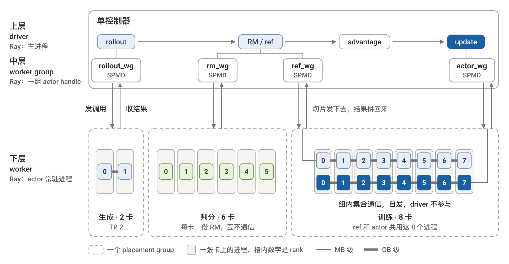
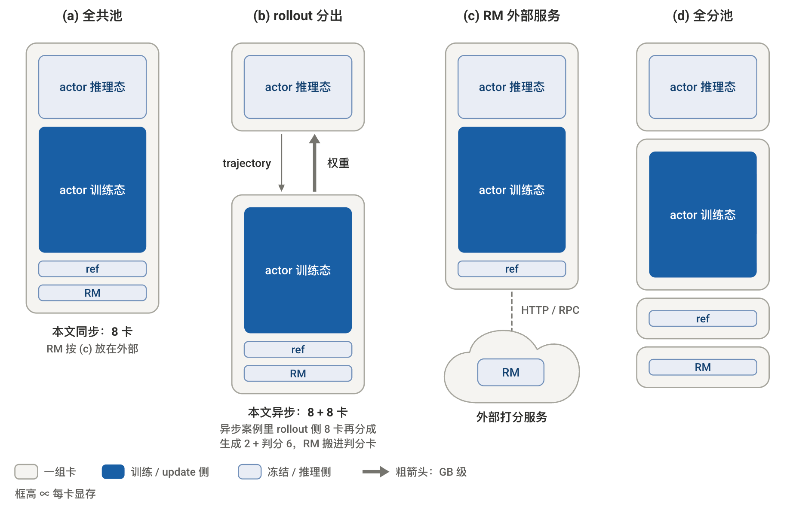
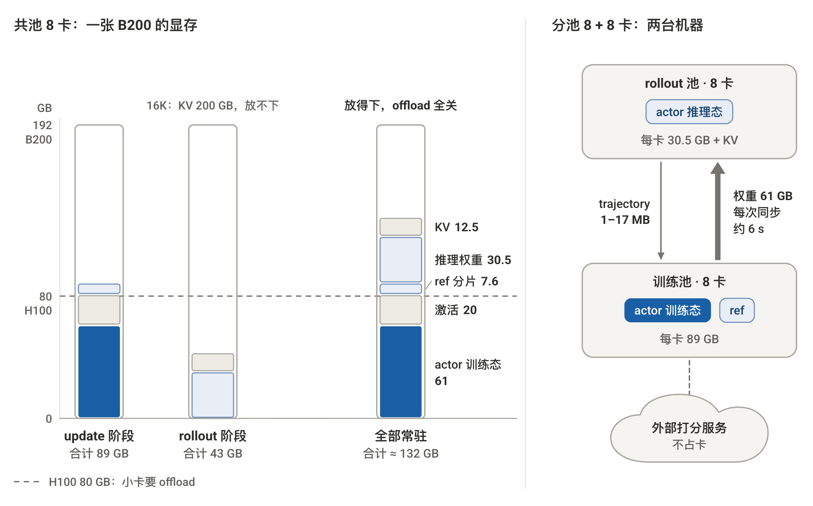
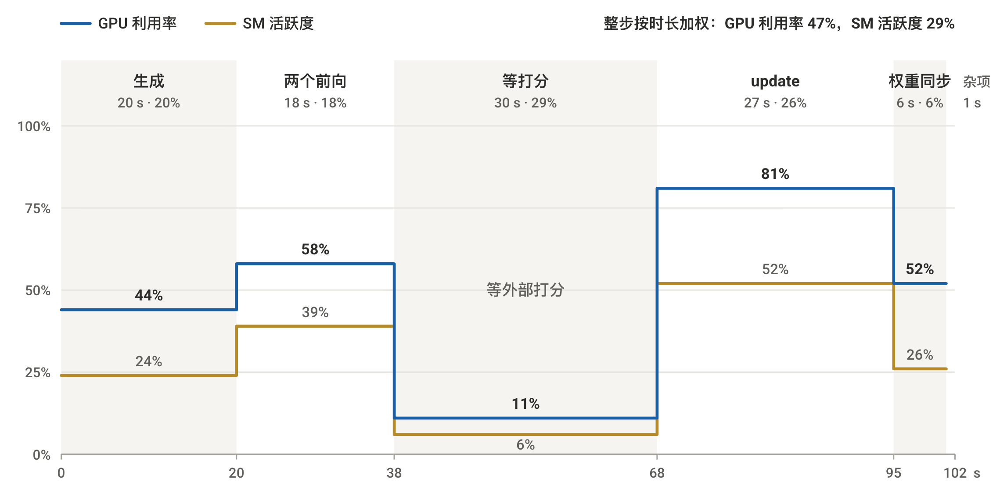
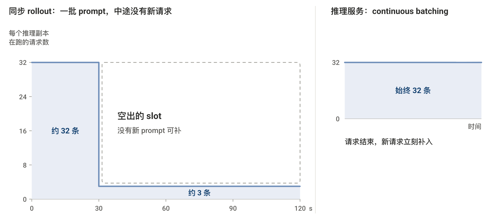
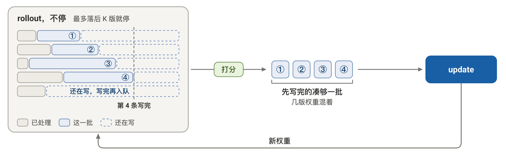

03-训推协同: 同步与异步
TL; DR：同步训练一组卡轮流做推理和训练；异步把训推分卡。本文先讲控制和放置，再用一个真实任务的数字走一遍同步到异步。
前言
02 篇 讨论了各类算法。本章我们以 GRPO 任务（带 RM）为例，看它在机器上怎样运行。
最近正好做了一个 GRPO 训练任务的性能优化，本篇需要数字的地方，就拿它当 demo计算吧！
Qwen3-30B-A3B，16 卡 B200 同步，RM 是外部打分服务。随后再推到异步的情况。
GRPO 相对 PPO 删去了 critic（02 篇 §3.1：PPO 四模型到 GRPO 的两处替换）。advantage 改用组内统计：同一 prompt 采 G 条，每条的 reward 减组均值、除组标准差。在场的是三个模型：
| 模型 | 状态 | 作用 |
|---|---|---|
| actor | 训练 | 被训的 policy；rollout 用推理引擎，update 用训练引擎 |
| RM | 冻结 | 每条打一个分；可换成规则（RLVR） |
| ref | 冻结 | 出 ref_logp，KL 基准 |
RM 有三种常见形态，负载各不相同：
| RM 形态 | 输出 | 负载 | 可用引擎 |
|---|---|---|---|
| 判别式 RM | 一个标量分 | 无梯度前向 / prefill only | 训练引擎 或 推理引擎 |
| 生成式 RM | 评语 + 分数 | 自回归生成：prefill + decode，有长尾 | 推理引擎 |
| 规则 / verifier | 对错判定 | CPU：规则匹配，或在 sandbox 里执行代码 | 不用 GPU 引擎 |
RM 放在哪些卡上、能否和其他阶段重叠，是 §2 放置的问题。
正文的设定是 G = 8，一个 batch 取 128 个 prompt，共 1024 条 trajectory。一个 step 按 01 的 loop 走四个阶段，下表按计算逐行列出：
| 阶段 | 计算 | 负载 | 引擎 |
|---|---|---|---|
| rollout | actor 每个 prompt 采 G 条 | 自回归生成 | 推理 |
| reward | RM 每条打一个分 | 随 RM 形态 | 随 RM 形态 |
| compute advantage | 组内减均值、除标准差 | 张量统计 | CPU |
| update 准备 | ref 求 ref_logp |
无梯度前向 | 训练 |
| update 准备 | actor 重算 old_logp |
无梯度前向 | 训练 |
| update | 分 mini-batch 多轮：前向 → loss → 反向 → step | 训练前后向 | 训练 |
表外说明三点：
- update 多轮：可以让一轮 rollout 采出多于一次更新所需的数据，供 actor 多轮更新。
- 如 rollout 1024 条、mini-batch 取 512 条，训练侧就更新 2 轮。
- 第 2 轮起 actor 已不是采样时那版，靠 ratio + clip 限制步幅（01 篇 §3.5）
- 两个 logprob：rollout 后、update 前整批算一次，多轮里当常数，不参与 advantage。
old_logp要用采样时那版 actor 算，所以必须赶在更新前。ref_logp来自冻结的 ref，何时算都一样。- 两者默认用训练引擎，和
new_logp同一套数值实现。变体：old_logp由 rollout 引擎采样时顺带返回，省一次前向；数值差异归 04 篇（训推一致性）。
- update 里怎么用：每轮
new_logp对old_logp组 ratio、对ref_logp组 KL：
结构对应 02 篇 §3.4 手写 GRPO：torch.no_grad() 块先算两个 logprob，再进 update 循环。
一个 step 的流程如下。

这张图是一个闭环，数据和权重各走一个方向。以训练中途的第 17 步为例，rollout 用 v17 生成，update 后得到 v18：
- 数据：推理 → 训练。update 要等本批的 rollout、打分、logprob 都收齐
- 权重：训练 → 推理。下一批 rollout 要等 v18 同步进推理引擎
本篇按这两个方向展开：§1 控制（谁来编排每一步）→ §2 放置（各阶段放在哪些卡上）→ §3 同步 / §4 异步（权重方向的等待保不保留）。
1. 控制
一个 RL step 要编排 3 个模型、4 个阶段。actor 以推理和训练两种身份出现，RM 负责打分，ref 负责求 logprob。每个模型内部又跨多张卡做 FSDP 或 TP。控制指谁来发起每一步计算、数据经谁流转。
1.1 多控制器与单控制器
控制方式按「谁决定下一步算什么」分两种：
- 多控制器（multi-controller）：没有进程掌握全局。每个进程跑同一份程序、处理不同数据，靠约定好的通信顺序和别人对齐。这种形态叫 SPMD（Single Program Multiple Data）
- 单控制器（single-controller）：一个进程掌握全局流程，决定每一步算什么、数据发给谁；其他进程只执行它发来的调用
PyTorch 的数据并行两种都实现过（训练策略 02 篇 §1.1），今天默认是多控制器：
- DP（
torch.nn.DataParallel）：早期方案，单控制器，GPU 0 的主进程调度所有卡 + 通信（早已不用，这里只作对照） - DDP（
torch.nn.parallel.DistributedDataParallel）、FSDP（torch.distributed.fsdp）：多控制器，当代SFT / pretrain 脚本的默认
| DP：单控制器 | DDP / FSDP：多控制器 | |
|---|---|---|
| 进程 | 一个进程驱动所有卡 | 一卡一进程，SPMD |
| 数据路径 | 输入 scatter、输出 gather 都经 GPU 0 | rank 之间直接集合通信，无中转 |
| 结果 | GPU 0 成为瓶颈，被 DDP 取代 | 模型内部高效，Megatron / FSDP 都这样写 |
[搬到 RL]
RL 有多个模型，两种写法各走到极端都不行：
| 写法 | 做法 | 问题 |
|---|---|---|
| 全按多控制器 | 每个进程内嵌整条 RL 流程，按 rank 扮演角色 | 模型之间的传输要手写；换放置 / 加模型改所有角色 |
| 全按单控制器 | driver 下发每一步计算 | 模型内部 GB 级通信经 driver 中转，重演 DP 瓶颈 |
「模型之间的传输」指 response 从 actor 的 rank 组交给 RM 的 rank 组：两边布局不同，没有现成 collective，要自己组织 send / recv 并让所有进程顺序一致。模型内部的通信 FSDP 已包好，不是问题。
出路在通信量的差别。RL 的通信分两层，差三个数量级：
- 模型之间：只传 token 和 logprob，MB 级（§2.4）
- 模型内部：一次 FSDP 前向要 all-gather 全部参数，30B 约 61 GB
所以控制也按层分：模型内部沿用训练本来的 SPMD；模型之间新加一个 driver，给多模型数据流一个能看到全图的进程。
1.2 混合控制：分层
HybridFlow（verl 的论文，verl 是其开源实现）按这个思路分层。
[三层]
| 层 | 对象 | Ray 对应物 | 职责 |
|---|---|---|---|
| 上 | driver | 主进程 | 调用各模型，单控制器 |
| 中 | worker group，每模型 1 个 | placement group | 一个模型 |
| 下 | worker，每卡 1 个 | Ray actor，常驻进程 | 装训练 / 推理引擎，SPMD |
- driver：只看到 worker group；组内通信不管
- worker group：driver 内的对象，持有组内所有 worker 的 handle。卡来自 resource pool：先向 Ray 建 placement group 锁定一组卡，再在上面建 group；几个模型绑同一个 pool 就是共池
- worker：每卡一个 Ray actor 常驻进程，权重常驻显存；装该角色的引擎（actor 训练态 FSDP / Megatron，rollout vLLM / SGLang，ref / RM 训练引擎）
[主流框架]
主流 RL 框架都是这种分层，上层编排、下层现成引擎：
| 框架 | 上层编排 | 下层训练引擎 | 下层推理引擎 |
|---|---|---|---|
| verl | Ray，单 driver | FSDP、Megatron | vLLM、SGLang |
| OpenRLHF | Ray | DeepSpeed | vLLM，另有 SGLang 接入 |
| NeMo-RL | Ray | DTensor（FSDP2）、Megatron | vLLM、Megatron，另有 SGLang |
| slime | Ray | Megatron，另有 FSDP | SGLang |
| AReaL | 训练进程自编排，HTTP 调推理服务 | FSDP | SGLang 服务 |
四个用 Ray 做上层编排。AReaL（资源所讲的版本）例外：编排留在训练进程里，推理引擎作为 HTTP 服务调用，Ray 只用来启动进程。具体差异留到 06 篇（框架横向对比）。下面以 verl 为例。
[为分层多出的三样]
- 数据格式 DataProto：verl 定义的跨模型统一的数据格式。一个 batch 从 rollout 到 update 一路是同一个对象：batch 维对齐的 tensor（token、
old_logp、reward……）加 meta data；各阶段输出union进去，按第 0 维chunk/concat - 数据 dispatch：数据切分改由 driver 做（普通 FSDP 里每个 rank 用
DistributedSampler自取），因为每个模型上数据布局可能不同 - 参数 sharding：不变。每个 rank 在
init_model里自取参数分片，driver 不参与
[一次调用的路径]
driver 一行 ref_policy_wg.compute_ref_log_prob(batch)，结果是 8 个 rank 各算一片、拼回一个 batch。sharding 已在 init_model 做好，不在路径里：
| 步 | 在哪 | 做什么 | 传什么 |
|---|---|---|---|
| 1 dispatch | driver | DataProto 按 DP 切成 dp_size 片 | — |
| 2 remote | driver → 各 rank | 对每个 handle 发一次 .remote(片)，共 8 次，立刻返回 future |
数据片，MB 级 |
| 3 计算 | 各 rank | 跑 Worker 的 compute_ref_log_prob(片)，即 FSDP 前向 |
组内 all-gather，GB 级 |
| 4 collect | 各 rank → driver | ray.get 拉回各片，按 DP 顺序 concat，union 回 DataProto |
结果片，MB 级 |
两点细节：
- TP 组内各 rank 拿同一片、算同一片，结果只取一个 rank 的
- all-gather 由各 rank 的 FSDP 自己发起，走到同一层时凑齐，driver 不参与
切法写在方法声明上：计算类（compute_ref_log_prob、update_actor）按 DP 切、拼；初始化类（init_model）原样发给每个 rank。driver 只剩一行调用，换并行配置只改 worker 登记。

对应 verl 的名字（single_controller 模块）：
- 声明切法：
@register(dispatch_mode=Dispatch.DP_COMPUTE_PROTO)/Dispatch.ONE_TO_ALL；新版本改用make_nd_compute_dataproto_dispatch_fn(mesh_name=...) - Ray 版 WorkerGroup：
RayWorkerGroup；register另有blocking参数控制是否等齐；回传 rank 取 TP rank 0 且 PP rank 0
1.3 fork-join：上层的并发
update 前的三个无梯度计算（RM 打分、actor 重算 old_logp、ref 前向）互不依赖，可以重叠。框架默认串行（verl 的 register 默认 blocking=True）。
分层后并发很好写：.remote() 返回 future，先发慢的，再做别的，update 前一起取。以 RM 为外部服务为例：先发出打分，接着做两个前向，update 前取回分数。
- 实际任务里就可以这么做：打分在后台跑，actor、ref 前向趁这段算完，只剩残余等待
- 参考任务里：打分 58 s，两个前向加提前开始的几秒藏住 39 s，剩下等 19 s（§2.3、§3.2）
- 这只是逻辑并发。两个调用如果落在同一批卡上仍会排队，见 §2 放置
2. 放置：共池与分池
放置回答：每个计算用什么引擎、放在哪组卡上。先列选项（§2.1），再看三个约束（§2.2–2.4），最后小结（§2.5）。
2.1 放置的选项
GRPO 在场三个模型：actor、ref（与 actor 同 backbone，一份冻结权重）、RM（backbone 可以不同）。
放置要为每个计算定两件事：哪个模型用哪种引擎算，放在哪组卡上。只前向和前向 + 反向差别很大，后者才要梯度和优化器状态。
| 计算 | 模型 | 引擎与负载 | 放哪 |
|---|---|---|---|
| rollout | actor | 推理引擎，prefill + decode | rollout 卡组 |
| RM 打分 | RM | 训练引擎只前向，或推理引擎；规则用 CPU | 与训练共卡 / 单独一池 / 外部服务 |
old_logp |
actor | 训练引擎只前向（重算），或推理引擎采样时返回 | 训练侧 / 随 rollout |
ref_logp |
ref | 训练引擎只前向 | 训练侧 |
| update | actor | 训练引擎前向 + 反向 | 训练卡组 |
- RM 和训练共卡：显存各占各的；计算默认分时串行
- 框架默认：共池时每卡只有一个 Ray actor 进程，几个角色都在里面，一次只执行一个调用（§1.2）
- 要真正重叠，就单独一池或放外面（HTTP / RPC）
old_logp是省时间与数值一致的取舍：- 推理引擎采样时返回，省一次前向
- 使用训练引擎，「训推不一致」造成的影响更小（
new_logp使用训练引擎）。换引擎差 0.05，ratio 就偏 5%，而 clip 只有 ±0.2
ref_logp哪个引擎都行：KL 系数小，不敏感；用训练引擎只是省事- 引擎间的差怎么来、怎么处理，见下篇（训推一致性）
最关键的一个选项：actor 的 rollout 和 update 用不用同一组卡。
- 共池（colocate）：同一组卡，只能轮流执行，所以只能同步（§3）
- 分池（disaggregate）：各一组卡，可以同时执行，异步的前提（§4）。池间要传权重和 trajectory（rollout 的输出：prompt + 生成的 token）
这和推理侧 PD 混合 / PD 分离是同一个取舍（推理优化 10 篇：prefill 和 decode 拆成两池，代价是池间传 KV）。

本文案例的选择：RM 是外部服务；old_logp 用训练引擎重算、ref_logp 训练侧。
比较两种放置：同步全共池 8 卡，和异步（rollout 分出）的 8 + 8 卡。
选哪种，看三笔账：
- 容量（§2.2）：每卡放不放得下，要不要中途 offload
- 配比（§2.3）：分池时每边给几张卡
- 传输（§2.4）：分池多出的池间流量
2.2 容量账
最省显存的是共池同步：各阶段串行，每个阶段可以独占整张卡。所以先看单个阶段放不放得下，再看能不能几样同时常驻。
以 Qwen3-30B-A3B 为例，按公开配置：
- 总参数 30.5B，每 token 激活 3.3B（MoE，每层 128 个专家选 8 个）
- 48 层，hidden 2048，4 个 KV head，head_dim 128
显存口径沿用 训练策略 02 篇（那篇用 Qwen3-8B 从 config 算到每卡训练显存）。
[第一关：update]
update 最耗显存，先看它。默认开 ZeRO-3（FSDP 全分片）和 gradient checkpoint，8 卡时每卡：
| 项 | 计算 | 每卡 |
|---|---|---|
| actor 训练态 | 30.5B × 16 B / 8 | 61 GB |
| 激活 | 4K token 约 10 GB × micro-batch 2 | 20 GB |
| 合计 | 81 GB |
- 81 GB 已经超过 H100 的 80 GB，8 卡 H100 放不下；B200（192 GB）绰绰有余
- 激活小，是因为 hidden 只有 2048、每 token 只走 8 个专家，远小于 30B dense
- 未计 all-gather buffer、CUDA context 等杂项
[推理侧：权重 + KV]
rollout 每卡要一份推理权重和 KV cache：
- 权重：bf16 共 61 GB；TP 2 时每卡 30.5 GB
- KV 每 token：2 × 层数 × KV head 数 × head_dim × 2 B = 2 × 48 × 4 × 128 × 2 B ≈ 98 KB。取决于 attention 的实现：GQA 只有 4 个 KV head，比 32 个 head 的 MHA 小 8 倍
- KV 总量：每卡并发条数 × 序列长度上限 × 98 KB。长度上限由 rollout 的截断设置决定
1024 条分给 4 个 TP 2 副本，每副本 256 条，KV 再切到两张卡上：
| 序列长度上限 | 每卡 KV | 每卡合计 |
|---|---|---|
| 1K（短 response） | 12.5 GB | 43 GB |
| 16K（long-CoT） | 200 GB | 放不下，引擎按并发上限分几轮跑 |
[其余计算]
- ref 前向：一份 bf16 权重，8 卡分片后每卡 7.6 GB；只前向，激活很小
old_logp重算：用 actor 训练态里已有的权重，只前向，不新增常驻显存- RM：外部服务，不占卡
[要不要 offload]
各阶段单独都放得下。再看全部常驻：
| 卡 | 全部常驻 | 结论 |
|---|---|---|
| B200，192 GB | 61 + 20 + 7.6 + 30.5 + 12.5 ≈ 132 GB | 放得下，offload 全关 |
| 更小的卡 | 超出 | 阶段切换时释放，峰值降到 max(81, 30.5 + KV) |
- 释放的手段：推理侧用 vLLM sleep mode、SGLang release memory；训练侧把分片、optimizer state、ref 权重 offload 到 CPU
- 代价：每个 step 两次搬运。61 GB 按 PCIe 20 GB/s，单程约 3 s
分池时两侧各自常驻、不搬运：训练池每卡 61 + 20 + 7.6 ≈ 89 GB，rollout 池每卡 30.5 GB + KV。B200 上都放得下。所以异步要 16 卡，是因为两边要同时算。
2.3 配比账
只有分池要算：两侧同时跑，step 由慢的一侧决定，所以要让两侧耗时接近。batch 固定 1024 条，它是算法超参，不为吞吐随意加。
各阶段耗时随卡数的变化（同步、batch 1024 条、实测取整）：
| 阶段 | 8 卡 | 16 卡 |
|---|---|---|
| rollout 生成 | 22 s | 20 s |
actor 重算 old_logp |
16 s | 9 s |
| ref 前向 | 16 s | 9 s |
| actor update | 53 s | 27 s |
| 权重同步 | 6 s | 6 s |
| 外部打分 | 58 s，服务不稳时可到 100 s 以上 | 53 s，与卡数无关 |
总 batch size 固定 1024 条，卡数变就是每卡 batch size 变，两种负载反应不同：
- rollout 几乎不变：decode 是 memory-bound，每步读一遍权重加全部 KV；KV 分到每卡 << 30.5 GB 的权重，所以 batch size 128 还是 256 差别很小。步数由最长 response 决定。
- 训练侧近似线性：compute-bound，时间和 batch size 成正比
- 权重同步不变：每卡要装载的推理权重固定（TP 2 时 30.5 GB）
所以 rollout 侧少给卡。但卡数不能随便分，要过两关：
- 整除：推理的 TP、训练的 DP / TP / PP 都要整除各自的卡数；batch 也要被副本数、DP 数整除
- 容量（§2.2）：训练侧放得下模型状态；推理侧放得下模型 + KV，每卡 batch size 越大 KV 越多
- 另有偏好：TP 组、训练池尽量不跨机，资源池按整机分
对于demo任务，16 卡以内过得了整除关的分法（训练侧卡数整除 1024，rollout 侧是 TP 2 的倍数）。step = 两侧较慢者 + 权重同步 6 s；打分在外部服务，先单列不计：
| 分法 | rollout 侧 | 训练侧 | 打分（外部） | step，不计打分 | 备注 |
|---|---|---|---|---|---|
| 8 卡内 4 + 4 | ≈ 22 s | ≈ 170 s | 外部，另算 | ≈ 176 s | 比共池同步 135 s 还慢：分池必须加卡 |
| 16 卡 8 + 8 | 22 s | 85 s | 外部，另算 | 91 s | 按整机切 |
主线用 8 + 8。算术上 4 + 12 更优，但 1024 不被 12 整除，不可选；再加卡应加给训练侧。打分能不能藏进 step，由调度决定：§3.2 同步、§4.2 异步各算一次。
2.4 传输账
- 共池：无跨池传输，权重同卡交接
- 分池：主要是每 step 一次权重同步，61 GB
- 权重传输 (主要)：训练池 → rollout 池，IB 直传约 2.4 s，经 checkpoint 文件约 61 s；§2.3 表取 6 s，含 reshard 和加载
- trajectory 传输 (可忽略)：rollout 池 → 训练池，1–17 MB，忽略
- RM：外部服务 - 成本在排队；框架内 - 单独一池时传输同 trajectory，忽略
reshard 和版本切换归 04 篇。
2.5 小结
放置的主线：rollout 和 update 共卡还是分卡 → 分卡之后三笔账，评估可行性和收益。
- 共池 / 分池（§2.1）：共卡只能轮流算（同步），分卡才能同时算（异步）
- 放不放得下（§2.2）：训练侧看 update，推理侧看权重 + KV；共池时再看能否全部常驻，放不下就阶段间 offload
- 怎么分卡（§2.3）：rollout 加卡收益小，训练加卡收益大；整除和容量先预筛选
- 分池多出什么传输（§2.4）：每 step 一次权重同步
分池是为了同时算，不是为了显存。等不等上一批 update，是 §3 同步与 §4 异步的区别。

3. 同步：两道等待
3.1 理论
[什么是同步]
同步和异步差在两处，放置和数据：
| 同步（synchronous） | 异步（asynchronous） | |
|---|---|---|
| 卡 | rollout 和 update 共用一组，串行交替 | 分两组，并行 |
| 数据 | update 用本步刚生成的这批 | rollout 的权重落后训练若干版本 |
| 版本差 Δv 举例 | 0、1（2 轮 mini-batch） | 1、2（领先 1 批，每 2 步同步） |
- Δv 从哪来
- 同步：一批分 2 轮 mini-batch 更新，第 2 轮用的权重已更新 1 次；靠 ratio + clip 兜住（01 篇的 PPO 式截断）
- 异步：生成领先几批，Δv 就从几起；几次 update 才同步一次权重，中间每次 update 再加 1（04 篇按这两个设置算 Δv）
- 同步保留两道等待：
- update 等本批数据收齐（算法依赖，去不掉）；
- 下一批 rollout 等 update 完成、新权重到位
- 异步去掉第二道：训推分卡，rollout 用旧几版权重
先把同步和异步各画一个周期看区别，两张图同一比例尺，标注了周期；看完再分析同步：
%%{init: {'theme': 'base', 'themeCSS': '.task{stroke-width:1.2px}.activeCrit0,.activeCrit1,.activeCrit2,.activeCrit3{fill:#FAEEC6;stroke:#B58A26}.taskText.critText0,.taskText.critText1,.taskText.critText2,.taskText.critText3{fill:#FFFFFF !important}.taskText.activeText0,.taskText.activeText1,.taskText.activeText2,.taskText.activeText3{fill:#12416F !important}.taskText.activeCritText0,.taskText.activeCritText1,.taskText.activeCritText2,.taskText.activeCritText3{fill:#6F4E08 !important}.grid .tick line{stroke:#E6E4DE !important}.grid .tick text{font-size:12px !important}[id$=pv1],[id$=pv3],[id$=nx1],[id$=nx2]{fill:#FFFFFF;stroke:#A5A49D;stroke-dasharray:4 2}[id$=sp1]{transform:scaleY(.08);fill:#A5A49D;stroke:none}rect.vert{fill:#75746E !important;stroke:none !important;y:36px;height:72px}[id$=cy1]{height:1.5px;y:105px;fill:#75746E !important;stroke:none !important}[id$=cy1-text]{transform:translateY(-2px)}[id$=s4-text],[id$=b4-text]{font-size:11px}.taskText[id$=pv1-text],.taskText[id$=pv3-text],.taskText[id$=nx1-text],.taskText[id$=nx2-text]{fill:#5F5E5A !important}.taskText[id$=cy1-text]{fill:#2C2C2A !important}[id$=sw]{fill:none !important;stroke:none !important}.taskText[id$=sw-text]{fill:#5F5E5A !important}', 'gantt': {'displayMode': 'compact', 'fontSize': 14, 'sectionFontSize': 14, 'topPadding': 40, 'leftPadding': 100, 'rightPadding': 60, 'useWidth': 1050}, 'themeVariables': {'fontFamily': 'Roboto, Noto Sans CJK SC, PingFang SC, Microsoft YaHei, sans-serif', 'textColor': '#2C2C2A', 'titleColor': '#2C2C2A', 'gridColor': '#E6E4DE', 'sectionBkgColor': '#FFFFFF', 'sectionBkgColor2': '#FFFFFF', 'altSectionBkgColor': '#FFFFFF', 'taskBkgColor': '#CDD0F2', 'taskBorderColor': '#747AD6', 'activeTaskBkgColor': '#D3E3F4', 'activeTaskBorderColor': '#3B7DBF', 'critBkgColor': '#747AD6', 'critBorderColor': '#534FBC', 'doneTaskBkgColor': '#EDEBE4', 'doneTaskBorderColor': '#A5A49D', 'taskTextColor': '#2B2D73', 'taskTextDarkColor': '#2C2C2A', 'taskTextLightColor': '#2C2C2A', 'taskTextOutsideColor': '#2C2C2A', 'vertLineColor': '#75746E'}}}%%
gantt
title 同步 16 卡，推理与训练共卡：一步 1024 条
dateFormat X
axisFormat %s
section 推理与训练
rollout，1024 条 :active, s1, 0, 20s
前向 :s5, after s1, 18s
等打分 :done, sw, after s5, 30s
update ① :crit, s2, after sw, 13s
update ② :crit, s3, after s2, 14s
权重同步 :done, s4, after s3, 6s
section 打分，外部服务
打分，边生成边打分 :active, crit, j0, 0, 68s
section
1024 条，102 s :cy1, 0, 101s
section
:done, sp1, 0, 140s
:vert, ve0, 0, 0s
:vert, ve1, after s4, 0s%%{init: {'theme': 'base', 'themeCSS': '.task{stroke-width:1.2px}.activeCrit0,.activeCrit1,.activeCrit2,.activeCrit3{fill:#FAEEC6;stroke:#B58A26}.taskText.critText0,.taskText.critText1,.taskText.critText2,.taskText.critText3{fill:#FFFFFF !important}.taskText.activeText0,.taskText.activeText1,.taskText.activeText2,.taskText.activeText3{fill:#12416F !important}.taskText.activeCritText0,.taskText.activeCritText1,.taskText.activeCritText2,.taskText.activeCritText3{fill:#6F4E08 !important}.grid .tick line{stroke:#E6E4DE !important}.grid .tick text{font-size:12px !important}[id$=pv1],[id$=pv3],[id$=nx1],[id$=nx2]{fill:#FFFFFF;stroke:#A5A49D;stroke-dasharray:4 2}[id$=sp1]{transform:scaleY(.08);fill:#A5A49D;stroke:none}rect.vert{fill:#75746E !important;stroke:none !important;y:36px;height:120px}[id$=cy1]{height:1.5px;y:153px;fill:#75746E !important;stroke:none !important}[id$=cy1-text]{transform:translateY(-2px)}[id$=s4-text],[id$=b4-text]{font-size:11px}.taskText[id$=pv1-text],.taskText[id$=pv3-text],.taskText[id$=nx1-text],.taskText[id$=nx2-text]{fill:#5F5E5A !important}.taskText[id$=cy1-text]{fill:#2C2C2A !important}[id$=w0],[id$=w1]{fill:none !important;stroke:none !important}.taskText[id$=w0-text],.taskText[id$=w1-text]{fill:#5F5E5A !important}', 'gantt': {'displayMode': 'compact', 'fontSize': 14, 'sectionFontSize': 14, 'topPadding': 40, 'leftPadding': 100, 'rightPadding': 60, 'useWidth': 1050}, 'themeVariables': {'fontFamily': 'Roboto, Noto Sans CJK SC, PingFang SC, Microsoft YaHei, sans-serif', 'textColor': '#2C2C2A', 'titleColor': '#2C2C2A', 'gridColor': '#E6E4DE', 'sectionBkgColor': '#FFFFFF', 'sectionBkgColor2': '#FFFFFF', 'altSectionBkgColor': '#FFFFFF', 'taskBkgColor': '#CDD0F2', 'taskBorderColor': '#747AD6', 'activeTaskBkgColor': '#D3E3F4', 'activeTaskBorderColor': '#3B7DBF', 'critBkgColor': '#747AD6', 'critBorderColor': '#534FBC', 'doneTaskBkgColor': '#EDEBE4', 'doneTaskBorderColor': '#A5A49D', 'taskTextColor': '#2B2D73', 'taskTextDarkColor': '#2C2C2A', 'taskTextLightColor': '#2C2C2A', 'taskTextOutsideColor': '#2C2C2A', 'vertLineColor': '#75746E'}}}%%
gantt
title 异步 16 卡，生成 2 + 判分 6 + 训练 8：两步各 512 条
dateFormat X
axisFormat %s
section 推理 2 卡
rollout 第 k 批 :active, q1, 0, 18s
rollout 第 k+1 批 :active, q2, after pv3, 18s
rollout 第 k+2 批 :active, nx1, after b0, 18s
section 判分 6 卡
打分 第 k 批 :active, crit, k1, 0, 59s
打分 第 k+1 批 :active, crit, k2, after pv3, 61s
打分 第 k+2 批 :active, crit, nx2, after b0, 59s
section 训练 8 卡
前向 第 k-1 批 :pv1, 0, 16s
update 第 k-1 批 :pv3, after pv1, 25s
前向 第 k 批 :g0, after pv3, 16s
:done, w0, after g0, 2s
update 第 k 批 :crit, b0, after w0, 25s
前向 第 k+1 批 :g1, after b0, 16s
:done, w1, after g1, 2s
update 第 k+1 批 :crit, b1, after w1, 25s
权重同步 :done, b4, after b1, 6s
section
1024 条，92 s :cy1, after pv3, 92s
section
:done, sp1, 0, 140s
:vert, ve0, after pv3, 0s
:vert, ve1, after b4, 0s两张图的设置，时长都是实测取整，详细设定见下面两个案例：
- 同步：16 卡共卡，RM 是外部服务；mbs = 512，rollout 一批 1024 条，update 两次
- 异步：生成 2 + 判分 6 + 训练 8 卡；mbs = 512，生成领先 1 批，每 2 步同步一次权重
[单 step 分析]
下面只看同步，一个 step 就够。图上两点补充：
- 训练和推理模型都常驻，所以切换没有开销
- 外部打分和两个前向（actor、ref）重叠，前向不依赖分数，update 依赖
[时间] $$ T_{\text{sync}} = T_{\text{gen}} + T_{\text{old}} + T_{\text{ref}} + T_{\text{update}} + T_{\text{sync_w}} + \max(J - H,\ 0) $$
- T_gen：rollout，生成一批
- T_old、T_ref：两个前向，actor 算 old_logp，ref 算 ref_logp
- T_update：前向 + 反向，分 mini-batch 几轮
- T_sync_w：权重同步，训练引擎 → 推理引擎
- J：打分一批的耗时；H：预算，能和打分重叠的计算，同步下是两个前向，边生成边打分再多几秒
- max(J − H, 0)：等打分，打分比预算长出的部分
空转来自等打分和权重同步；long-CoT 下再加 rollout 长尾，见本节末尾。
3.2 案例
参考任务 16 卡同步，就是上面同步图里的那一步。先看一个 step 的时间和利用率。
[设定]
- 算法：GRPO，每批 128 个 prompt × G = 8，共 1024 条；update 分 2 个 mini-batch
- actor：Qwen3-30B-A3B（MoE）；ref 是它的冻结副本
- 卡：16 张 B200，共池
- RM：35B 生成式打分模型，外部服务，SGLang FP8，10 张 H100
- 两个前向：
old_logp重算和ref_logp都在训练侧 - 耗时：放置一节配比账那张表的 16 卡列
[一个 step]
%%{init: {'theme': 'base', 'themeCSS': '.task{stroke-width:1.2px}.activeCrit0,.activeCrit1,.activeCrit2,.activeCrit3{fill:#FAEEC6;stroke:#B58A26}.taskText.critText0,.taskText.critText1,.taskText.critText2,.taskText.critText3{fill:#FFFFFF !important}.taskText.activeText0,.taskText.activeText1,.taskText.activeText2,.taskText.activeText3{fill:#12416F !important}.taskText.activeCritText0,.taskText.activeCritText1,.taskText.activeCritText2,.taskText.activeCritText3{fill:#6F4E08 !important}.grid .tick line{stroke:#E6E4DE !important}.grid .tick text{font-size:12px !important}[id$=g5-text],[id$=g7-text],[id$=g6-text]{font-size:12px}[id$=m1],[id$=s0]{fill:none !important;stroke:none !important}.taskText[id$=m1-text],.taskText[id$=s0-text]{fill:#5F5E5A !important}', 'gantt': {'displayMode': 'compact', 'fontSize': 14, 'sectionFontSize': 14, 'useWidth': 1050, 'leftPadding': 100, 'rightPadding': 20, 'topPadding': 40}, 'themeVariables': {'fontFamily': 'Roboto, Noto Sans CJK SC, PingFang SC, Microsoft YaHei, sans-serif', 'textColor': '#2C2C2A', 'titleColor': '#2C2C2A', 'gridColor': '#E6E4DE', 'sectionBkgColor': '#FFFFFF', 'sectionBkgColor2': '#FFFFFF', 'altSectionBkgColor': '#FFFFFF', 'taskBkgColor': '#CDD0F2', 'taskBorderColor': '#747AD6', 'activeTaskBkgColor': '#D3E3F4', 'activeTaskBorderColor': '#3B7DBF', 'critBkgColor': '#747AD6', 'critBorderColor': '#534FBC', 'doneTaskBkgColor': '#EDEBE4', 'doneTaskBorderColor': '#A5A49D', 'taskTextColor': '#2B2D73', 'taskTextDarkColor': '#2C2C2A', 'taskTextLightColor': '#2C2C2A', 'taskTextOutsideColor': '#2C2C2A', 'vertLineColor': '#75746E'}}}%%
gantt
title 16 卡共池同步，一个 step 102 s
dateFormat X
axisFormat %s
section 16 卡
rollout 生成 v17 :active, g1, 0, 20s
actor 前向 :g2, after g1, 9s
ref 前向 :g3, after g2, 9s
等打分 30 s :done, m1, after g3, 30s
update ① v17 → v18 :crit, g5, after s1, 13s
update ② v18 → v19 :crit, g7, after g5, 14s
权重同步 :done, g6, after g7, 6s
section 外部打分
:done, s0, 0, 15s
打分 J = 53 s :active, crit, s1, after s0, 53s[利用率]
各阶段的 GPU 利用率差别很大。实测取整，Grafana 30 s 采样，按阶段叠成一步：
| 阶段 | 时长 | GPU 利用率 | SM 活跃度 |
|---|---|---|---|
| rollout 生成 | 20 s | 44% | 24% |
| 两个前向 | 18 s | 58% | 39% |
| 等打分 | 30 s | 11% | 6% |
| update | 27 s | 81% | 52% |
| 权重同步 | 6 s | 52% | 26% |
| 整步avg | 101 s | 47% | 29% |
- 生成最低：decode 是 memory-bound，SM 比训练段还低
- 等打分接近 0：16 张卡都在等外部服务，残余是采样跨了段界
RL 任务的平均利用率天然低于 SFT：只有 update 那四分之一时间接近满载。要提升，对症的是缩短等待。

[同步内能做的一：重叠]
- 打分与两个前向重叠：预算 H = 两个前向 18 s + 提前开始的 5 s = 省23 s
- step 外的停顿：存 ckpt、validation 挪到后台
重叠的上限是预算。打分比预算长的部分，怎么排都省不掉。
[同步内能做的二：卡数]
16 卡是从 8 卡加上来的。对照 8 卡的实测，看卡数改变了什么：
| 卡数 | rollout | actor 前向 | ref 前向 | update | 权重同步 | 等打分 | step | 卡时 |
|---|---|---|---|---|---|---|---|---|
| 8 | 22 s | 16 s | 16 s | 53 s | 6 s | 19 s | 135 s | 1080 GPU·s |
| 16 | 20 s | 9 s | 9 s | 27 s | 6 s | 30 s | 102 s | 1632 GPU·s |
%%{init: {'theme': 'base', 'themeCSS': '.task{stroke-width:1.2px}.activeCrit0,.activeCrit1,.activeCrit2,.activeCrit3{fill:#FAEEC6;stroke:#B58A26}.taskText.critText0,.taskText.critText1,.taskText.critText2,.taskText.critText3{fill:#FFFFFF !important}.taskText.activeText0,.taskText.activeText1,.taskText.activeText2,.taskText.activeText3{fill:#12416F !important}.taskText.activeCritText0,.taskText.activeCritText1,.taskText.activeCritText2,.taskText.activeCritText3{fill:#6F4E08 !important}.grid .tick line{stroke:#E6E4DE !important}.grid .tick text{font-size:12px !important}[id$=a6-text],[id$=b6-text]{font-size:9px}[id$=b2-text],[id$=b3-text]{font-size:12px}[id$=am],[id$=bm],[id$=a0],[id$=b0]{fill:none !important;stroke:none !important}.taskText[id$=am-text],.taskText[id$=bm-text],.taskText[id$=a0-text],.taskText[id$=b0-text]{fill:#5F5E5A !important}', 'gantt': {'displayMode': 'compact', 'fontSize': 14, 'sectionFontSize': 14, 'useWidth': 1050, 'leftPadding': 100, 'rightPadding': 20, 'topPadding': 40}, 'themeVariables': {'fontFamily': 'Roboto, Noto Sans CJK SC, PingFang SC, Microsoft YaHei, sans-serif', 'textColor': '#2C2C2A', 'titleColor': '#2C2C2A', 'gridColor': '#E6E4DE', 'sectionBkgColor': '#FFFFFF', 'sectionBkgColor2': '#FFFFFF', 'altSectionBkgColor': '#FFFFFF', 'taskBkgColor': '#CDD0F2', 'taskBorderColor': '#747AD6', 'activeTaskBkgColor': '#D3E3F4', 'activeTaskBorderColor': '#3B7DBF', 'critBkgColor': '#747AD6', 'critBorderColor': '#534FBC', 'doneTaskBkgColor': '#EDEBE4', 'doneTaskBorderColor': '#A5A49D', 'taskTextColor': '#2B2D73', 'taskTextDarkColor': '#2C2C2A', 'taskTextLightColor': '#2C2C2A', 'taskTextOutsideColor': '#2C2C2A', 'vertLineColor': '#75746E'}}}%%
gantt
title 同步的卡数：8 卡 135 s，16 卡 102 s
dateFormat X
axisFormat %s
section 共池 8 卡
rollout 生成 :active, a1, 0, 22s
actor 前向 :a2, after a1, 16s
ref 前向 :a3, after a2, 16s
等打分 19 s :done, am, after a3, 19s
update ① :crit, a5, after as, 26s
update ② :crit, a7, after a5, 27s
权重同步 :done, a6, after a7, 6s
:done, a0, 0, 15s
打分 58 s :active, crit, as, after a0, 58s
section 共池 16 卡
rollout 生成 :active, b1, 0, 20s
actor 前向 :b2, after b1, 9s
ref 前向 :b3, after b2, 9s
等打分 30 s :done, bm, after b3, 30s
update ① :crit, b5, after bs, 13s
update ② :crit, b7, after b5, 14s
权重同步 :done, b6, after b7, 6s
:done, b0, 0, 15s
打分 53 s :active, crit, bs, after b0, 53s- rollout 几乎不变：22 → 20 s，decode 是 memory-bound，配比账里说过
- 训练侧减半：两个前向 32 → 18 s，update 53 → 27 s
- 等打分反而变长：打分不随卡数变，预算却从 39 s 缩到 23 s，等打分 19 → 30 s
- 真正缩短 step 的是 update：135 → 102 s 的 33 s 里，update 占 26 s
- 结果：16 卡快 1.32 倍，卡时多 51%
两条路都压不掉等打分：重叠的上限是预算，加卡反而让预算变小。要让卡不空等，只能训推分卡、错开版本，这就是下一章的异步。
3.3 此外：long-CoT 的长尾
参考任务 response 短，看不到长尾；long-CoT 任务里它可能是最大的空转。
- 现象：一批 rollout 由最长那条决定。90% 在 4K 内结束、最长 16K 时，后 3/4 的时间只剩一成请求在跑
- 空缺填不上：推理服务靠 continuous batching 补新请求；同步 RL 一批就是一批，中途没有新请求
- 打分：异步还可以错开周期；共卡则一起被推后
同步内只能在这批 prompt 里想办法：
| 手段 | 机制 | 代价 |
|---|---|---|
| over-sampling | 发 160 组，够 128 组就停 | 多发的浪费；数据偏短 |
| 截断 / 按长度分批 | 超长截掉；长度相近的同批 | reward 不完整；长度难预估 |
| DAPO 动态采样 | 丢全对 / 全错的组，补采 | 补采又是一轮长尾 |
都还在同步里。要填上空位，得让下一批提前进来，还是异步。

4. 异步：分卡，错开版本
4.1 理论
[两件事]
异步 = 训推分卡 + 错开版本。错开几批，生成和打分就能藏几步。变了三处：
- 卡分两组：rollout、训练各一组，不切换；判分在外部 or 单独一组
- 循环变了：下一批 rollout，和上一批训练并行
- 权重跨卡同步：每 N 次 update 一次，中间 rollout 用旧权重
画出来就是同步一章开头那张异步图，这里再放一遍，下面的公式对着它看：
%%{init: {'theme': 'base', 'themeCSS': '.task{stroke-width:1.2px}.activeCrit0,.activeCrit1,.activeCrit2,.activeCrit3{fill:#FAEEC6;stroke:#B58A26}.taskText.critText0,.taskText.critText1,.taskText.critText2,.taskText.critText3{fill:#FFFFFF !important}.taskText.activeText0,.taskText.activeText1,.taskText.activeText2,.taskText.activeText3{fill:#12416F !important}.taskText.activeCritText0,.taskText.activeCritText1,.taskText.activeCritText2,.taskText.activeCritText3{fill:#6F4E08 !important}.grid .tick line{stroke:#E6E4DE !important}.grid .tick text{font-size:12px !important}[id$=pv1],[id$=pv3],[id$=nx1],[id$=nx2]{fill:#FFFFFF;stroke:#A5A49D;stroke-dasharray:4 2}[id$=sp1]{transform:scaleY(.08);fill:#A5A49D;stroke:none}rect.vert{fill:#75746E !important;stroke:none !important;y:36px;height:120px}[id$=cy1]{height:1.5px;y:153px;fill:#75746E !important;stroke:none !important}[id$=cy1-text]{transform:translateY(-2px)}[id$=s4-text],[id$=b4-text]{font-size:11px}.taskText[id$=pv1-text],.taskText[id$=pv3-text],.taskText[id$=nx1-text],.taskText[id$=nx2-text]{fill:#5F5E5A !important}.taskText[id$=cy1-text]{fill:#2C2C2A !important}[id$=w0],[id$=w1]{fill:none !important;stroke:none !important}.taskText[id$=w0-text],.taskText[id$=w1-text]{fill:#5F5E5A !important}', 'gantt': {'displayMode': 'compact', 'fontSize': 14, 'sectionFontSize': 14, 'topPadding': 40, 'leftPadding': 100, 'rightPadding': 60, 'useWidth': 1050}, 'themeVariables': {'fontFamily': 'Roboto, Noto Sans CJK SC, PingFang SC, Microsoft YaHei, sans-serif', 'textColor': '#2C2C2A', 'titleColor': '#2C2C2A', 'gridColor': '#E6E4DE', 'sectionBkgColor': '#FFFFFF', 'sectionBkgColor2': '#FFFFFF', 'altSectionBkgColor': '#FFFFFF', 'taskBkgColor': '#CDD0F2', 'taskBorderColor': '#747AD6', 'activeTaskBkgColor': '#D3E3F4', 'activeTaskBorderColor': '#3B7DBF', 'critBkgColor': '#747AD6', 'critBorderColor': '#534FBC', 'doneTaskBkgColor': '#EDEBE4', 'doneTaskBorderColor': '#A5A49D', 'taskTextColor': '#2B2D73', 'taskTextDarkColor': '#2C2C2A', 'taskTextLightColor': '#2C2C2A', 'taskTextOutsideColor': '#2C2C2A', 'vertLineColor': '#75746E'}}}%%
gantt
title 异步 16 卡，生成 2 + 判分 6 + 训练 8：两步各 512 条
dateFormat X
axisFormat %s
section 推理 2 卡
rollout 第 k 批 :active, q1, 0, 18s
rollout 第 k+1 批 :active, q2, after pv3, 18s
rollout 第 k+2 批 :active, nx1, after b0, 18s
section 判分 6 卡
打分 第 k 批 :active, crit, k1, 0, 59s
打分 第 k+1 批 :active, crit, k2, after pv3, 61s
打分 第 k+2 批 :active, crit, nx2, after b0, 59s
section 训练 8 卡
前向 第 k-1 批 :pv1, 0, 16s
update 第 k-1 批 :pv3, after pv1, 25s
前向 第 k 批 :g0, after pv3, 16s
:done, w0, after g0, 2s
update 第 k 批 :crit, b0, after w0, 25s
前向 第 k+1 批 :g1, after b0, 16s
:done, w1, after g1, 2s
update 第 k+1 批 :crit, b1, after w1, 25s
权重同步 :done, b4, after b1, 6s
section
1024 条，92 s :cy1, after pv3, 92s
section
:done, sp1, 0, 140s
:vert, ve0, after pv3, 0s
:vert, ve1, after b4, 0s[off policy 程度]
两个设置定 Δv（04 篇 用同一套记法）：
- 领先几批 L：rollout 最多比训练多采 L 批；Δv 的起点（案例是领先1批）
- 几次 update 同步一次 N：中间每次 update Δv 加 1，同步后回到 L（案例是 2 step同步一次）
平均 off policy 程度：
- 案例 L = 1、N = 2 → 1、2 交替，平均 1.5
- 同步是 L = 0：2 轮 mini-batch → 0、1，平均 0.5
[时间]
训练组每步只剩自己的计算，外加一个等待：一批的生成 + 打分，能不能藏进领先的 L 步里。
- T_old、T_ref：两个前向，actor 算 old_logp，ref 算 ref_logp
- T_update：前向 + 反向
- T_sync_w / N：跨卡权重同步，N 步摊一次
- T_gen、J：rollout 一批、打分一批，和同步公式里的一样；边生成边打分，两段有重叠，合起来取实测
- H_a：预算。批在 L 步前发出，本步两个前向做完才要分数；L 每加 1，预算多一整步
- 等数据 = max(T_gen + J − H_a, 0)：一批从发出到分数齐，藏不进预算的部分
- 地板：两个前向 + update，由训练卡数定
两段各由自己那侧定：
- T_gen：rollout 侧的卡数、回答长度、长尾
- J：打分侧放哪、几张卡、回答上限、失败重试
打分放哪有三种：
| 放法 | 打分的卡 | 特点 |
|---|---|---|
| 外部服务 | 服务的卡数 | 不占训练卡；跟不上就成瓶颈 |
| 内部，单独几张卡 | 分给打分的卡数 | 自己加卡；和生成同时进行 |
| 内部，与 rollout 共卡 | rollout 组的卡数 | 先生成再打分，用 rollout 的空闲 |
[代价]
- 数据相比同步旧：多出领先批次 L
- 传输：每 N 步跨卡传一份权重，量见放置一节的传输账
- 闲卡：L = 1 时生成卡、判分卡大半空着
4.2 案例
[设定]
任务同上一章的案例，改成异步。
- 卡：生成 2 + 判分 6 + 训练 8，共 16。生成用 vLLM，判分每卡一份 SGLang BF16
- 批：一批 512 条，两步 1024 条；下面的时间按两步算，好和同步比
- 错开：生成领先 1 批，每 2 步同步一次权重，Δv 1、2
- 判分搬进任务：生成 8 卡太浪费，分 6 卡给内部判分；FP8 格式错多，改 BF16
[一个窗口]
%%{init: {'theme': 'base', 'themeCSS': '.task{stroke-width:1.2px}.activeCrit0,.activeCrit1,.activeCrit2,.activeCrit3{fill:#FAEEC6;stroke:#B58A26}.taskText.critText0,.taskText.critText1,.taskText.critText2,.taskText.critText3{fill:#FFFFFF !important}.taskText.activeText0,.taskText.activeText1,.taskText.activeText2,.taskText.activeText3{fill:#12416F !important}.taskText.activeCritText0,.taskText.activeCritText1,.taskText.activeCritText2,.taskText.activeCritText3{fill:#6F4E08 !important}.grid .tick line{stroke:#E6E4DE !important}.grid .tick text{font-size:12px !important}[id$=tm1],[id$=tm2]{fill:none !important;stroke:none !important}.taskText[id$=tm1-text],.taskText[id$=tm2-text]{fill:#5F5E5A !important}', 'gantt': {'displayMode': 'compact', 'fontSize': 14, 'sectionFontSize': 14, 'useWidth': 1050, 'leftPadding': 100, 'rightPadding': 20, 'topPadding': 40}, 'themeVariables': {'fontFamily': 'Roboto, Noto Sans CJK SC, PingFang SC, Microsoft YaHei, sans-serif', 'textColor': '#2C2C2A', 'titleColor': '#2C2C2A', 'gridColor': '#E6E4DE', 'sectionBkgColor': '#FFFFFF', 'sectionBkgColor2': '#FFFFFF', 'altSectionBkgColor': '#FFFFFF', 'taskBkgColor': '#CDD0F2', 'taskBorderColor': '#747AD6', 'activeTaskBkgColor': '#D3E3F4', 'activeTaskBorderColor': '#3B7DBF', 'critBkgColor': '#747AD6', 'critBorderColor': '#534FBC', 'doneTaskBkgColor': '#EDEBE4', 'doneTaskBorderColor': '#A5A49D', 'taskTextColor': '#2B2D73', 'taskTextDarkColor': '#2C2C2A', 'taskTextLightColor': '#2C2C2A', 'taskTextOutsideColor': '#2C2C2A', 'vertLineColor': '#75746E'}}}%%
gantt
title 异步 16 卡，生成 2 + 判分 6 + 训练 8：两步 1024 条，92 s
dateFormat X
axisFormat %s
section 训练 8 卡
前向 第 k 批 :t1, 0, 16s
:done, tm1, after t1, 2s
update 第 k 批 :crit, t2, after tm1, 25s
前向 第 k+1 批 :t3, after t2, 16s
:done, tm2, after t3, 2s
update 第 k+1 批 :crit, t4, after tm2, 25s
权重同步 :done, t5, after t4, 6s
section 生成 2 卡
生成 第 k+1 批 :active, g1, 0, 18s
生成 第 k+2 批 :active, g2, after t2, 18s
section 判分 6 卡
打分 第 k 批，上一步已开始 :active, crit, j0, 0, 18s
打分 第 k+1 批 :active, crit, j1, 0, 61s
打分 第 k+2 批 :active, crit, j2, after t2, 41s读图：
- 训练卡几乎不停：两步 92 s，实测 93 s
- 打分几乎藏住了：剩 2 s 等待来自偶发的拖尾批，判分回答写满上限、失败重发
- 生成卡、判分卡半闲：只领先 1 批，生成完要等训练开始下一步
[利用率]
| 角色 | 卡 | 每步 46 s 里忙 | GPU 利用率 | SM 活跃度 |
|---|---|---|---|---|
| 训练 | 8 | 41 s，89% | 79% | 55% |
| 生成 | 2 | 17 s，37% | 27%，与判分合计 | 21%，与判分合计 |
| 判分 | 6 | 16 s，34% | 同上 | 同上 |
| 全部 | 16 | 53% | 38% |
- 训练卡：SM 28% → 55%，同步时的等打分没了
- 全部卡：GPU 利用率 45% → 53%，生成和判分那 8 张卡拉低了平均
[和同步比]
实测，统一成 1024 条：
| 配置 | 卡 | 打分 | 1024 条 | 条 / 秒 | 等打分 | 卡时 | 数据旧几次 update |
|---|---|---|---|---|---|---|---|
| 8 卡同步 | 8 | 外部，10 张 H100 | 135 s | 7.6 | 19 s | 1080 GPU·s | 0.5 |
| 16 卡同步 | 16 | 外部，10 张 H100 | 102 s | 10.1 | 30 s | 1632 GPU·s | 0.5 |
| 16 卡异步 2 + 6 + 8 | 16 | 内部 6 卡，已计入 | 93 s | 11.0 | 3 s | 1488 GPU·s | 1.5 |
异步只比 16 卡同步快 10%，但账不一样：同步的打分在外部，另用了 10 张 H100；异步把判分收进 16 卡里，占 6 张，训练卡从 16 减到 8，两个前向 + update 从 45 s 涨到 83 s，等打分省下的 27 s 几乎被吃掉。训练卡是地板，下一步是把它加回去。
[加卡：24 卡]
训练卡 8 → 16，其余不变。先看判分侧没改时的窗口：
%%{init: {'theme': 'base', 'themeCSS': '.task{stroke-width:1.2px}.activeCrit0,.activeCrit1,.activeCrit2,.activeCrit3{fill:#FAEEC6;stroke:#B58A26}.taskText.critText0,.taskText.critText1,.taskText.critText2,.taskText.critText3{fill:#FFFFFF !important}.taskText.activeText0,.taskText.activeText1,.taskText.activeText2,.taskText.activeText3{fill:#12416F !important}.taskText.activeCritText0,.taskText.activeCritText1,.taskText.activeCritText2,.taskText.activeCritText3{fill:#6F4E08 !important}.grid .tick line{stroke:#E6E4DE !important}.grid .tick text{font-size:12px !important}[id$=tm1],[id$=tm2]{fill:none !important;stroke:none !important}.taskText[id$=tm1-text],.taskText[id$=tm2-text]{fill:#5F5E5A !important}', 'gantt': {'displayMode': 'compact', 'fontSize': 14, 'sectionFontSize': 14, 'useWidth': 1050, 'leftPadding': 100, 'rightPadding': 20, 'topPadding': 40}, 'themeVariables': {'fontFamily': 'Roboto, Noto Sans CJK SC, PingFang SC, Microsoft YaHei, sans-serif', 'textColor': '#2C2C2A', 'titleColor': '#2C2C2A', 'gridColor': '#E6E4DE', 'sectionBkgColor': '#FFFFFF', 'sectionBkgColor2': '#FFFFFF', 'altSectionBkgColor': '#FFFFFF', 'taskBkgColor': '#CDD0F2', 'taskBorderColor': '#747AD6', 'activeTaskBkgColor': '#D3E3F4', 'activeTaskBorderColor': '#3B7DBF', 'critBkgColor': '#747AD6', 'critBorderColor': '#534FBC', 'doneTaskBkgColor': '#EDEBE4', 'doneTaskBorderColor': '#A5A49D', 'taskTextColor': '#2B2D73', 'taskTextDarkColor': '#2C2C2A', 'taskTextLightColor': '#2C2C2A', 'taskTextOutsideColor': '#2C2C2A', 'vertLineColor': '#75746E'}}}%%
gantt
title 异步 24 卡，生成 2 + 判分 6 + 训练 16，判分优化前：两步 1024 条，76 s
dateFormat X
axisFormat %s
section 训练 16 卡
前向 第 k 批 :t1, 0, 10s
等打分 10 s :done, tm1, after t1, 10s
update 第 k 批 :crit, t2, after tm1, 15s
前向 第 k+1 批 :t3, after t2, 10s
等打分 10 s :done, tm2, after t3, 10s
update 第 k+1 批 :crit, t4, after tm2, 15s
权重同步 :done, t5, after t4, 6s
section 生成 2 卡
生成 第 k+1 批 :active, g1, 0, 15s
生成 第 k+2 批 :active, g2, after t2, 15s
section 判分 6 卡
打分 第 k 批，上一步已开始 :active, crit, j0, 0, 20s
打分 第 k+1 批 :active, crit, j1, 0, 55s
打分 第 k+2 批 :active, crit, j2, after t2, 43s- 训练侧硬约束变短：两个前向 + update 83 → 48 s
- 打分成了元凶：预算 62 → 48 s，拖尾批 60–90 s 藏不住，等打分 3 → 21 s；1024 条只从 93 降到 76 s
- 两条路：(1) 缩短判分；(2) 多错开一批，off policy 程度升一级
任务后续选了前者：等打分压到 7 s，2 step = 1024 条 = 62 s。
4.3 案例之外：再放宽
案例一批一个权重版本，还能再放宽两档：
| 级别 | 训练一批里的权重 | 一条 response 里的权重 | 新权重到了 |
|---|---|---|---|
| 案例 | 同一版 | 同一版 | 生成卡正空着，直接换 |
| 流式 queue | 混几版 | 同一版 | 在途的写完，新请求用新版 |
| 完全异步 | 混几版 | 混几版 | 在途的也换 |
[流式 queue]

- rollout 不按批：一直产出，落后训练到设定的版本数才停
- 打完分当场凑batch：凑够一批就送去 update，一批里混着几版权重生成的
- 收益：训练不等 rollout 和打分最慢的那条；空出的位置随时补新请求
- 代价：off policy 程度更高，而且一批里混着几种 Δv
[完全异步]
判据：一条 response 里的 token 是否由不同版本的权重生成。
案例里不会，一条写完才换权重；完全异步里新权重到了就切：
%%{init: {'theme': 'base', 'themeCSS': '.task{stroke-width:1.2px}.activeCrit0,.activeCrit1,.activeCrit2,.activeCrit3{fill:#FAEEC6;stroke:#B58A26}.taskText.critText0,.taskText.critText1,.taskText.critText2,.taskText.critText3{fill:#FFFFFF !important}.taskText.activeText0,.taskText.activeText1,.taskText.activeText2,.taskText.activeText3{fill:#12416F !important}.taskText.activeCritText0,.taskText.activeCritText1,.taskText.activeCritText2,.taskText.activeCritText3{fill:#6F4E08 !important}.grid .tick line{stroke:#E6E4DE !important}.grid .tick text{font-size:12px !important}.grid .tick text{display:none}[id$=c1],[id$=i1]{fill:#E9EDF4;stroke:#6F8FB8}[id$=i3]{fill:#B5C7DF;stroke:#6F8FB8}[id$=i5]{fill:#195FA5;stroke:#195FA5}.taskText[id$=c1-text],.taskText[id$=i1-text],.taskText[id$=i3-text]{fill:#2C2C2A !important}', 'gantt': {'displayMode': 'compact', 'fontSize': 14, 'sectionFontSize': 14, 'useWidth': 1050, 'leftPadding': 130, 'rightPadding': 20, 'topPadding': 40}, 'themeVariables': {'fontFamily': 'Roboto, Noto Sans CJK SC, PingFang SC, Microsoft YaHei, sans-serif', 'textColor': '#2C2C2A', 'titleColor': '#2C2C2A', 'gridColor': '#E6E4DE', 'sectionBkgColor': '#FFFFFF', 'sectionBkgColor2': '#FFFFFF', 'altSectionBkgColor': '#FFFFFF', 'taskBkgColor': '#CDD0F2', 'taskBorderColor': '#747AD6', 'activeTaskBkgColor': '#D3E3F4', 'activeTaskBorderColor': '#3B7DBF', 'critBkgColor': '#747AD6', 'critBorderColor': '#534FBC', 'doneTaskBkgColor': '#EDEBE4', 'doneTaskBorderColor': '#A5A49D', 'taskTextColor': '#2B2D73', 'taskTextDarkColor': '#2C2C2A', 'taskTextLightColor': '#2C2C2A', 'taskTextOutsideColor': '#2C2C2A', 'vertLineColor': '#75746E'}}}%%
gantt
title 一条长 response 的 token 各由哪版权重生成（横轴：token 位置）
dateFormat X
axisFormat %s
section 案例
全部由 v17 生成，写完才换权重 :active, c1, 0, 100s
section 可中断生成
v17 :active, i1, 0, 35s
v18，新权重到了就切 :i3, after i1, 35s
v19 :crit, i5, after i3, 30s- 可中断生成（AReaL）：打断在途的 response，重 prefill，换新权重接着写
- 变体（Kimi K1.5 partial rollout）：不等新权重，按额度切，每轮 rollout 时间封顶。两个超参：
- 回答上限：整条最长，到了截断结束。一般都有
- 每轮额度（K1.5 加的）：每条每轮最多写多少（如 8K），到了暂停、下轮续写
- 代价：版本要记到 token 段，下一章讲
5. 代码：Ray 调度最小实现
把控制一章的三层写成 toy 代码，能跑的在 ipynb ｜ Colab。两处简化：
- 一组卡当成一个整体，只起一个 actor：不模拟组内多卡，也就不用 worker group 切片、拼回
- 各阶段用 sleep 模拟，不装真模型
概念和代码的对应：
| 自上而下 | 是什么 | 代码里 |
|---|---|---|
| driver | 主进程，决定每步算什么、数据发给谁 | sync_step、run_async 的循环 |
| 一组卡 | 常驻进程，装着引擎等 driver 派活；Ray 叫 actor | @ray.remote class Worker，Worker.remote() 起一个 |
| 派活 | .remote() 发出去，立刻返回凭据（future），不等 |
w.rollout.remote(x) |
| 取结果 | ray.get(凭据) 才等 |
ray.get(ref) |
[Worker：一组卡]
四个方法对应前言阶段表的四个阶段：
@ray.remote
class Worker:
def rollout(self, prompts): ... # rollout：生成一批，记下生成时的权重版本 bv
def logp(self, batch): ... # 两个前向：old_logp、ref_logp，不需要分数
def update(self, batch, scores): ... # 前向 + 反向，一个 mini-batch，版本号 +1
def load_weights(self, version): ... # 权重同步：训练引擎 → 推理引擎
@ray.remote
class Judge:
def score(self, batch): ... # 打分一批：外部服务，或任务内的判分卡
[同步：driver 的一个 step]
- 一个 Worker 轮流当推理引擎和训练引擎
- 打分先发后取，和两个前向重叠
def sync_step(w, judge, prompts, n_mb=2):
batch = ray.get(w.rollout.remote(prompts)) # rollout，推理态
score_ref = judge.score.remote(batch) # 发给打分，立刻返回 future
ray.get(w.logp.remote(batch)) # 两个前向，和打分重叠
scores = ray.get(score_ref) # update 要分数：等打分
for _ in range(n_mb): # update，分 mini-batch
ray.get(w.update.remote(batch, scores))
ray.get(w.load_weights.remote(ray.get(w.get_version.remote()))) # 权重同步，同卡交接
[异步：driver 的两个循环]
- 生成、判分、训练各一个 actor
inflight里最多 L 批在途，就是"领先 L 批"：trainer 取走一批，生成侧补一批- 每 N 次 update 给生成侧推一次权重
def run_async(gen, judge, train, n_steps, L=1, N=2):
inflight = collections.deque() # 在途的批，最多 L 个
def dispatch():
b = gen.rollout.remote(next_prompts()) # 生成侧用它当前的权重采一批
inflight.append((b, judge.score.remote(b))) # 生成完直接交给判分，driver 不等
for _ in range(L):
dispatch() # 先领先 L 批
for step in range(n_steps):
b_ref, s_ref = inflight.popleft() # trainer 取走最早的一批
dispatch() # 生成侧立刻补一批，保持领先 L
batch = ray.get(b_ref)
ray.get(train.logp.remote(batch)) # 两个前向
scores = ray.get(s_ref) # 等打分，通常已经好了
up = ray.get(train.update.remote(batch, scores))
if (step + 1) % N == 0: # 每 N 次 update 跨卡同步一次权重
ray.get(gen.load_weights.remote(up['version'] + 1))